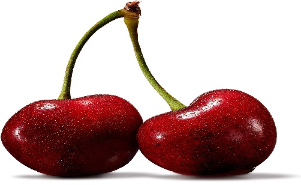

Top Healthiest Fruits in the World
1) Grapefruit
Grapefruit is one of the healthiest citrus fruits. Besides being a good source of vitamins and minerals, it is known for its ability to aid weight loss and reduce insulin resistance. For example, in a study in 91 people, those who ate half a fresh grapefruit before meals lost 2.9 pounds (1.3 kg) more weight than those who didn’t (1). In the same study, the grapefruit group had a significant reduction in insulin levels and reduced insulin resistance (1). Also, eating grapefruit has been shown to reduce cholesterol levels and help prevent kidney stones (2, 3, 4). Grapefruit is highly nutritious. Eating it may reduce insulin resistance, cholesterol and help prevent kidney stones. Grapefruit may also be useful for weight loss.
2. Pineapple
Among the tropical fruits, pineapple is a nutrition superstar. One cup (237 ml) of pineapple provides 131% of the Reference Daily Intake (RDI) for vitamin C and 76% of the RDI for manganese (5).
Pineapple also contains bromelain, a mixture of enzymes known for its anti-inflammatory properties and ability to digest protein (6).
Test-tube and animal studies suggest that bromelain may help protect against cancer and tumor growth (7, 8).
Pineapple is rich in vitamin C and manganese. Its bromelain content may fight inflammation and reduce the risk of cancer.
3. Avocado

Avocado is different from most other fruits.
Most fruits are high in carbs, while avocado is low in carbs and comprised mainly of healthy fats.
The majority of the fat in avocado is oleic acid, a monounsaturated fat linked to reduced inflammation and better heart health (9, 10).
In addition to healthy fats, avocados are loaded with potassium, fiber and magnesium (11).
One whole avocado provides 28% of the RDI for potassium. Adequate potassium intake is associated with reduced blood pressure and a lower risk of stroke (11, 12).
Avocados are rich in healthy fats and potassium, both of which are well known for their role in promoting heart health.
4. Blueberries
Blueberries have powerful health benefits.
They have an impressive nutrition profile, being particularly high in fiber, vitamin C, vitamin K and manganese (13).
Blueberries are also exceptionally high in antioxidants.
In fact, they are believed to contain the highest antioxidant content of the most commonly consumed fruits (14).
The antioxidants in blueberries may reduce the risk of chronic conditions, such as heart disease, diabetes and Alzheimer’s (15).
Blueberries are also known for their powerful effects on the immune system.
One study found that eating blueberries regularly may increase natural killer cells in the body. These help defend you against oxidative stress and viral infections (16).
Additionally, the antioxidants in blueberries may have a protective effect on your brain. For example, eating blueberries has been shown to improve memory in older adults (17, 18).
Blueberries are rich in a few important nutrients. They have a high antioxidant capacity and immune-enhancing properties, which may protect the body from illness.
5. Apple
Apples are among the most popular fruits, and also happen to be incredibly nutritious.
They contain a high amount of fiber, vitamin C, potassium and vitamin K. They also provide some B vitamins (19).
Studies suggest that the antioxidants in apples can promote heart health and reduce the risk of type 2 diabetes, cancer and Alzheimer’s (20, 21, 22, 23).
The antioxidant activity in apples has also been linked with increased bone density in animal and test-tube studies (24).
Another notable health benefit of apples is their pectin content.
Pectin is a prebiotic fiber that feeds the good bacteria in your gut and helps improve digestion and metabolic health (25, 26).
Apples are very nutritious. Their nutrients, antioxidants and fiber may reduce the risk of disease and improve digestion.
6. Pomegranate
Pomegranates are among the healthiest fruits you can eat.
Not only are they nutrient dense, they also contain powerful plant compounds that are responsible for most of their health benefits.
The antioxidant levels in pomegranate have been shown to be three times higher than those of green tea and red wine (27).
Studies have also shown that pomegranates have anti-inflammatory effects and may help reduce the risk of cancer (28, 29, 30).
Pomegranates have wide-ranging health benefits. They are incredibly high in antioxidants and other plant compounds that can help reduce inflammation and prevent disease.
7. Mango
7. Mango
Mangoes are an excellent source of vitamin C.
They also contain soluble fiber, which can provide many health benefits.
Additionally, mangoes have strong antioxidant and anti-inflammatory properties that may help reduce the risk of disease (31, 32).
In animal studies, the plant compounds in mangoes have been shown to protect against diabetes (31, 33).
Mangoes contain vitamin C and soluble fiber. They also contain plant compounds with antioxidant and anti-inflammatory effects.
8. Strawberries
Strawberries are highly nutritious.
Their vitamin C, manganese, folate and potassium contents are where they really shine (34).
Compared to other fruits, strawberries have a relatively low glycemic index. Eating them shouldn’t cause a big blood sugar spike (35, 36).
Similarly to other berries, strawberries have a high antioxidant capacity, which may reduce your risk of chronic disease (37).
Animal and test-tube studies have found that strawberries may also help prevent cancer and tumor formation (38, 39).
Strawberries are rich in several nutrients and antioxidants. Eating them may help control your blood sugar levels and reduce your risk of some diseases.
9. Cranberries
Cranberries have impressive health benefits.
They have an excellent nutrition profile, being rich in vitamin C, manganese, vitamin E, vitamin K1 and copper (40).
They also contain a significant amount of antioxidants called flavanol polyphenols, which can improve health (41, 42).
What makes cranberries unique from other fruits is that their juices and extracts help prevent urinary tract infections (43, 44).
A-Type proanthocyanidins are the compounds thought to be responsible for this effect, as they can prevent bacteria from attaching to the lining of the bladder and urinary tract (43, 44).
Cranberries are rich in several nutrients and antioxidants. They also contain beneficial plant compounds that help prevent urinary tract infections.
10. Lemon
Lemons are a very healthy citrus fruit known for their high vitamin C content.
They may be particularly helpful in promoting heart health due to their potential to lower blood lipids and blood pressure (45, 46).
Based on findings from animal studies, researchers have also proposed that the plant compounds in lemons can help prevent weight gain (47, 48).
Other studies show that the citric acid in lemon juice has the ability to treat kidney stones (49).
Lemons are rich in vitamin C and other plant compounds that may promote heart health, boost weight loss and help prevent kidney stones.
11. Durian
Durian is nicknamed the king of fruits
One cup (237 ml) of durian provides 80% of the RDI for vitamin C (50).
It is also rich in manganese, B vitamins, copper, folate and magnesium (50).
Furthermore, durian contains several healthy plant compounds that function as antioxidants (51).
Durian is rich in nutrients and plant compounds that can provide some promising health benefits.
12. Watermelon
Watermelon is high in vitamins A and C. It’s also rich in some important antioxidants, including lycopene, carotenoids and cucurbitacin E.
Some of watermelon’s antioxidants have been studied for their anti-cancer effects.
Lycopene intake is linked with a reduced risk of cancers of the digestive system, while cucurbitacin E may inhibit tumor growth (52, 53).
Consuming lycopene-rich foods can also promote heart health because of their ability to reduce cholesterol and blood pressure (52).
Of all the fruits, watermelon is one of the most hydrating. It is made up of 92% water, which can help you feel more full (52).
Watermelon is high in water, nutrients and antioxidants. It is also particularly high in a powerful antioxidant called lycopene.
13. Olives
Olives are a good source of vitamin E, iron, copper and calcium.
They also provide a lot of antioxidants, which may help prevent heart disease and liver damage, as well as have anti-inflammatory effects (54, 55, 56).
Similarly to avocados, olives contain oleic acid, which may provide several benefits for heart health and cancer prevention (57, 58).
Additionally, animal studies have linked some of the plant compounds in olives with a reduced risk of osteoporosis (59).
Olives provide a variety of vitamins, minerals and antioxidants. These may reduce the risk of heart disease, cancer and osteoporosis.
14. Blackberries
Blackberries are another incredibly healthy fruit, packed with vitamins, minerals, fiber and antioxidants.
They provide an impressive amount of vitamin C, vitamin K and manganese.
One cup (237 ml) of blackberries provides a whopping 8 grams of fiber (60).
Also, the antioxidants in blackberries have been shown to reduce inflammation and aging of the arteries. Both effects may protect against chronic illness, such as heart disease and cancer (37, 61).
Blackberries are a good source of many nutrients and beneficial plant compounds. Their antioxidants and anti-inflammatory properties may lower the risk of chronic disease.
15. Oranges
Oranges are one of the most popular and nutritious fruits in the world.
Eating one medium orange will provide a significant amount of vitamin C and potassium. They’re also a good source of B vitamins, such as thiamine and folate (62).
The plant compounds in oranges are responsible for most of their health benefits. These include flavonoids, carotenoids and citric acid.
For example, citric acid may reduce the risk of kidney stones (63, 64).
Oranges are similar to lemons with their impressive amounts of vitamin C and citric acid, which help increase iron absorption and prevent anemia (65, 66).
Oranges contain some important vitamins, minerals and antioxidants. These may reduce the risk of several conditions such as kidney stones and anemia.
16. Banana
Bananas are rich in vitamins and minerals and have quite a few health benefits to offer.
They are well known for being high in potassium. One medium banana provides 12% of the RDI for this mineral (67).
One unique property of bananas is their carb makeup.
The carbs in green, unripe bananas consist largely of resistant starch, which may improve blood sugar control and make you feel full (68).
Bananas also contain pectin, which may improve blood sugar control and digestive health (69, 70, 71).
Moreover, studies have shown that the high carb and mineral content of bananas makes them a great source of fuel before exercise (72).
Bananas provide several nutrients and plant compounds, including resistant starch and pectin. Bananas can have benefits for exercise, blood sugar control and digestive health.
17. Red and Purple Grapes

Grapes are very healthy. Their high antioxidant content is what makes them stand out.
The anthocyanins and resveratrol in grapes have both been shown to reduce inflammation (73, 74).
Also, animal studies suggest that the plant compounds in grapes may help protect your heart, eyes, joints and brain (75, 76, 77, 78, 79).
Red and purple grapes are rich in nutrients and other plant compounds that can decrease inflammation and lower your risk of disease.
18. Guava
Guava has a remarkable nutrition profile.
Eating just one ounce (28 grams) of guava will give you 107% of the RDI for vitamin C (80).
Guava is also rich in fiber, folate, vitamin A, potassium, copper and manganese (80).
The antioxidants in guava have been shown to protect cells from oxidative damage, indicating that they may help reduce the risk of chronic disease (81, 82).
Guava is another great source of pectin, which benefits digestion and may help prevent colon cancer (83).
Guava is high in vitamins, minerals, fiber and antioxidants. It may reduce inflammation and help prevent certain cancers.
19. Papaya
Papaya is a very healthy fruit that is high in vitamin C, vitamin A, potassium and folate.
It is also rich in the anti-cancer antioxidant lycopene (84).
What’s more, studies show that the body absorbs lycopene better from papaya than from other lycopene-rich fruits and vegetables (85).
There is also some evidence that papaya may improve digestion. It contains papain, an enzyme that makes protein easier to digest (86).
Papaya is nutrient dense and rich in antioxidants. Eating it may reduce your risk of cancer and improve digestion.
20. Cherries
 Cherries are rich in nutrients, especially potassium, fiber and vitamin C.
They contain antioxidants, including anthocyanins and carotenoids, which reduce inflammation and may help prevent several diseases (87, 88).
Another impressive health benefit of cherries is their melatonin content (89).
Melatonin is a hormone that signals your brain when it’s time to sleep. It may help treat insomnia and other sleep disorders (90).
One study concluded that the melatonin content in tart cherry juice enhanced sleep duration and quality (91).
Cherries are rich in nutrients and antioxidants. They also contain melatonin, which may improve the quality of your sleep.